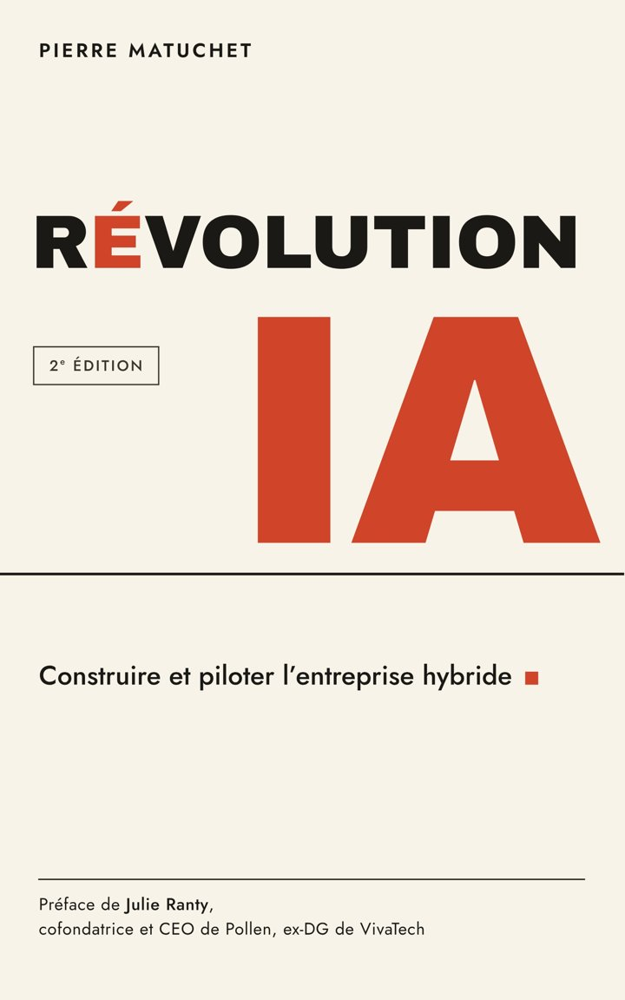
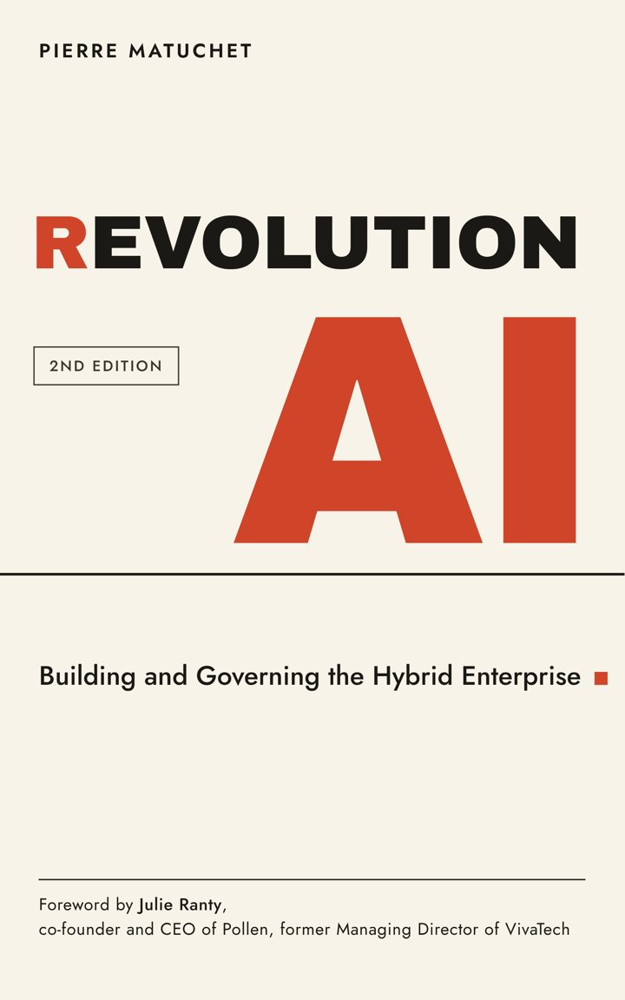

RÉVOLUTIONIA
REVOLUTIONAI
Construire et piloter l’entreprise hybrideBuilding and Governing the Hybrid Enterprise
Pierre Matuchet · Préface de Julie Ranty, cofondatrice et CEO de Pollen, ex-DG de VivaTechPierre Matuchet · Foreword by Julie Ranty, co-founder and CEO of Pollen, former Managing Director of VivaTech


Les droits d’auteur de cette édition vont aux Restos du Cœur.
All author royalties from this edition go to Les Restos du Cœur, the French food charity.
Broché et Kindle · parution le 31 octobre 2026
Paperback and Kindle · published October 31, 2026
L’intelligence devient abondante. L’arbitrage, lui, reste rare.
Intelligence is getting cheap. Judgment is not.
Obtenir une réponse juste d’une IA coûtait trente centimes de dollar au printemps 2024 ; il en coûte aujourd’hui quatre centièmes de centime. Pendant ce temps, chez Anthropic, les agents lancés par les salariés travaillent six heures pour chacune des leurs. Le coût unitaire s’effondre, les volumes explosent, et la question devient : qui décide de ce qu’on délègue ?
Getting a correct answer from an AI cost thirty cents in spring 2024; today it costs four hundredths of a cent. Meanwhile at Anthropic, agents launched by employees work six hours for every one of theirs. Unit cost collapses, volumes explode, and the question becomes: who decides what gets delegated?
Sources :Sources: Ethan Mollick, One Useful Thing (oct. 2026) · The Anthropic Institute, “How Employment is Changing at Anthropic” (Oct. 16, 2026)
Préparer → piloterPrepare → govern
v1.0 → v2.0| 1re édition | 1st edition | 2e édition | 2nd edition |
|---|---|---|---|
| Faut-il y aller ? | Should we go? | Qui arbitre ? | Who makes the trade-offs? |
| L’IA devient un acteur | AI becomes an actor | L’entreprise devient hybride | The enterprise becomes hybrid |
| Se préparer à la rupture | Prepare for the disruption | Déléguer sans s’aliéner | Delegate without losing agency |
| Ce que l’IA sait faire | What AI can do | Ce que coûte une tâche aboutie | What a completed task costs |
| Observateur engagé | Engaged observer | Opérateur | Operator |
| 11 chapitres | 11 chapters | 24 chapitres, 6 parties | 24 chapters, 6 parts |
Six mois après la première édition, la préparation n’est plus le sujet. Les agents sont entrés dans les processus, dans les budgets, dans les organigrammes. On ne demande plus s’il faut y aller. On demande : que coûte une décision prise par un agent ? Qui pilote ? Que fait-on du temps libéré ? Qui fabriquera nos seniors si les agents font le travail des juniors ?
Six months after the first edition, preparation is no longer the point. Agents are in the processes, the budgets, the org charts. Nobody asks whether to go anymore. They ask: what does a decision made by an agent cost? Who is in charge? What do we do with the time freed up? Who will train our seniors if agents do the juniors’ work?
J’écrivais alors en observateur engagé. J’écris désormais aussi en opérateur.Introduction
I used to write as an engaged observer. I now write as an operator too.Introduction
Trois questions, sept idéesThree questions, seven ideas
Pour un comité de directionFor an executive committeeOù vit l’intelligence ?
Where does intelligence live?
Déléguer sans se déposséder. Les modèles seront loués. Les boucles, non.
Delegate without giving up ownership. The models will be rented. The loops will not.
Qui arbitre ?
Who makes the trade-offs?
Déléguer sans abdiquer. Pas la machine, pas le fournisseur, pas le régulateur : vous.
Delegate without giving up authority. Not the machine, not the vendor, not the regulator: you.
Que fait-on du dividende ?
What do we do with the dividend?
Déléguer sans laisser filer le gain. Le temps libéré s’évapore si personne n’en décide.
Delegate without letting the gains dissipate. Freed-up time evaporates unless someone decides where it goes.
Six parties, vingt-quatre chapitresSix parts, twenty-four chapters
SommaireContentsLa boîte à outilsThe toolkit
PDF à imprimer · libre accèsPrintable PDFs · freeLes grilles du livre, prêtes à remplir en comité. Chacune tient sur une page et renvoie à son chapitre.
The book’s grids, ready to fill in with your leadership team. Each fits on one page and points to its chapter.
Sur LinkedInOn LinkedIn
Plus de 14 000 abonnés14,000+ followersChaque idée du livre fait l’objet d’un post : le chiffre, la grille, la décision à prendre lundi matin. Les débats en commentaire nourrissent la prochaine version.
Each idea in the book gets its own post: the number, the grid, the decision to make on Monday morning. The debates in the comments feed the next version.
Suivre Pierre Matuchet →Follow Pierre Matuchet →PressePress
Interviews et analysesInterviews and analysisDites-moi ce qui ne tient pasTell me what doesn’t hold
La première édition était un produit volontairement imparfait, mis sur le marché pour être exposé à la critique. La critique a eu lieu, et cette édition en sort. Elle restera imparfaite, parce que le paysage bougera encore. Vos objections écriront la V3 : un chiffre daté, un cas qui contredit une grille, une question qui manque.
The first edition was a deliberately imperfect product, released to be tested by critical readers. That test took place, and this edition came out of it. It will remain imperfect, because the landscape will keep moving. Your objections will write V3: a dated figure, a case that contradicts a grid, a missing question.
matuchet@gmail.com
- De 11 à 24 chapitres, en six parties, avec un épilogue sur l’AGI
- Nouveaux : la tour de contrôle, la guerre du token, le dirigeant architecte, la grande congélation des carrières
- L’échelle de l’entreprise hybride, avec ses deux états à côté : aliénée et aveugle
- Le test du mandat, le contrat d’exécution, la fiche de l’agent
- Chiffres datés et sourcés, pour être vérifiables et remplaçables
- Préface de Julie Ranty ; édition anglaise le même jour
- From 11 to 24 chapters, in six parts, with an epilogue on AGI
- New: the control tower, the token war, the executive as architect, the great career freeze
- The hybrid-enterprise ladder, with its two states off to the side: alienated and blind
- The mandate test, the execution contract, the agent page
- Dated, sourced figures, so they can be checked and replaced
- Foreword by Julie Ranty; French and English editions on the same day
- Vos retours de lecture
- Your reading notes